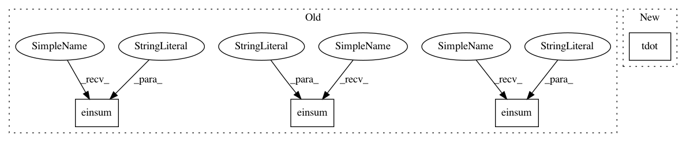

6ed91ce102545bd90644906876e5e18affe82744,GPy/kern/_src/psi_comp/linear_psi_comp.py,,psicomputations,#Any#Any#Any#,10
Before Change
mu = variational_posterior.mean
S = variational_posterior.variance
psi0 = np.einsum("q,nq->n",variance,np.square(mu)+S)
psi1 = np.einsum("q,mq,nq->nm",variance,Z,mu)
psi2 = np.einsum("q,mq,oq,nq->mo",np.square(variance),Z,Z,S) + np.einsum("nm,no->mo",psi1,psi1)
return psi0, psi1, psi2
After Change
psi0 = (variance*(np.square(mu)+S)).sum(axis=1)
psi1 = np.dot(mu,(variance*Z).T)
psi2 = np.dot(S.sum(axis=0)*np.square(variance)*Z,Z.T)+ tdot(psi1.T)
return psi0, psi1, psi2
def psiDerivativecomputations(dL_dpsi0, dL_dpsi1, dL_dpsi2, variance, Z, variational_posterior):
In pattern: SUPERPATTERN
Frequency: 3
Non-data size: 4
Instances
Project Name: SheffieldML/GPy
Commit Name: 6ed91ce102545bd90644906876e5e18affe82744
Time: 2014-11-20
Author: z.dai@sheffield.ac.uk
File Name: GPy/kern/_src/psi_comp/linear_psi_comp.py
Class Name:
Method Name: psicomputations
Project Name: SheffieldML/GPy
Commit Name: 6ed91ce102545bd90644906876e5e18affe82744
Time: 2014-11-20
Author: z.dai@sheffield.ac.uk
File Name: GPy/kern/_src/psi_comp/linear_psi_comp.py
Class Name:
Method Name: psicomputations
Project Name: SheffieldML/GPy
Commit Name: ded0b3366d20ba920658e75a93f1dba42b4b05d3
Time: 2015-09-03
Author: z.dai@sheffield.ac.uk
File Name: GPy/inference/latent_function_inference/inferenceX.py
Class Name: InferenceX
Method Name: compute_dL
Project Name: SheffieldML/GPy
Commit Name: 11f872db33ea37661f5cc74a5ad8fbf7ff3f0e72
Time: 2014-11-20
Author: z.dai@sheffield.ac.uk
File Name: GPy/kern/_src/psi_comp/sslinear_psi_comp.py
Class Name:
Method Name: psicomputations